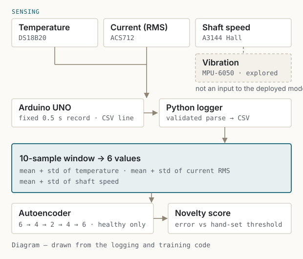
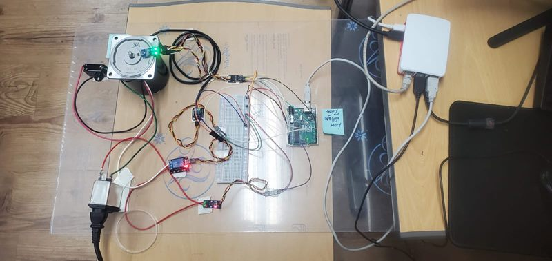
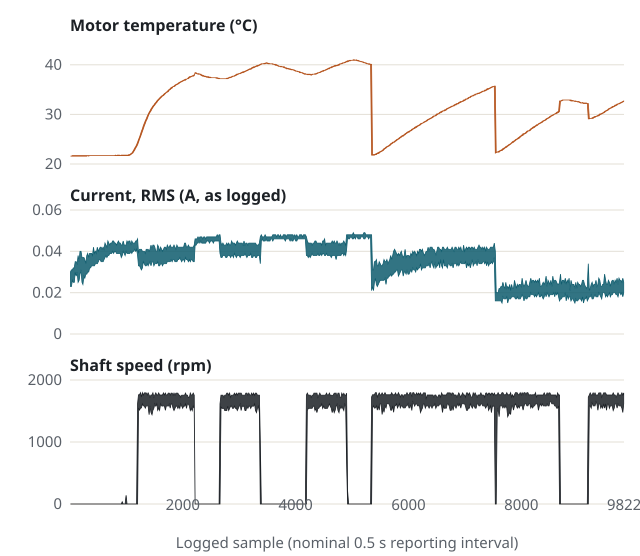
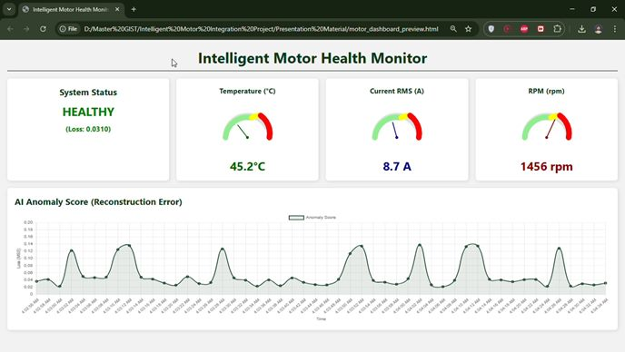

Induction-Motor Condition Monitoring
Healthy-baseline modelling from multisensor data.

Research brief
- Objective
- Monitor a running induction motor when labelled fault data could not be produced safely in a shared laboratory.
- Approach
- Because labelled fault data were unavailable, we modelled healthy operation instead and used autoencoder reconstruction error as a novelty score.
- Individual contribution
- Team of three. Mine: the logging architecture and file formats, the signal processing and windowed feature pipeline, the model comparison and the deployed autoencoder.
- Current status
- A 9,822-record healthy baseline acquired and a novelty score deployed behind a monitoring dashboard. No validated fault detector was produced.

The constraint that shaped the project
The original objectives named bearing wear, imbalance and misalignment. Supervised detection needs labelled examples of each, and producing them means damaging a working machine in a shared laboratory.
That constraint determined the method rather than merely limiting it. A model trained only on healthy data can be built from what was actually available, and it answers a narrower but answerable question: does this look like the operation it was trained on?
The machine was instrumented for surface temperature (DS18B20), line current (ACS712), shaft speed by Hall effect (A3144) and vibration (MPU-6050). An Arduino acquires them and writes a record every 0.5 s; a Python logger timestamps and stores it. Current is the noisiest channel, so a moving average is applied before the RMS value is taken.
From samples to six features
Single records are too noisy to judge. The pipeline works on ten-sample windows and reduces each to six numbers: the mean and standard deviation of temperature, of current RMS and of shaft speed. Mean captures the operating point; standard deviation captures how steadily the machine holds it.
Vibration was acquired throughout and is not an input to the deployed model. The logger records one value per channel every 0.5 s, so the stored vibration series describes slow changes in level rather than the frequency content in which bearing or imbalance signatures would appear. Including it would have implied a capability the logging rate did not support.

Learning what healthy looks like
A support vector machine, a k-nearest-neighbour model and an autoencoder were compared offline on the baseline, and the autoencoder was selected. Its reconstruction error is a continuous quantity rather than a hard class boundary, which suits a score that has to be thresholded later.
The final network is a dense 6–4–2–4–6 autoencoder. It compresses the six features to two numbers and reconstructs them. Trained on healthy windows alone, it reconstructs familiar operation accurately; the mean squared reconstruction error is the intended novelty score, compared against a hand-set threshold.
s = ‖x − x̂‖² ⁄ 6
alert ⇔ s > τmanual
Six features in, a two-dimensional bottleneck, six out. The score is the reconstruction error; τ was set by hand from the baseline.
What this score means
Reconstruction error measures distance from the training distribution. It is the quantity the design intends to use as a novelty score — it is not a fault classifier, it does not identify which fault is present, and because it was never exercised against real faults there is no evidence about how it responds to one. A genuine fault could raise it, leave it unchanged, or resemble an operating condition simply absent from the baseline.
The operator view
A dashboard presents the live readings and the current novelty score, so the model's output is legible to someone standing at the machine rather than reading a log file.
The capture beside this text is the interface running on placeholder values, not a recording of the motor. It shows the layout and information design only.

Limitations and next steps
Not established
- No validated fault detection — bearing wear, imbalance and misalignment were named as objectives and never tested. No sensitivity, false-alarm rate or detection latency is claimed.
- One machine, one baseline — the training data covers a single motor over a limited set of operating conditions. Normal operation outside that set would look novel to the model.
- Threshold set by hand — τ was chosen by inspection of the baseline, not against a calibrated false-positive target.
- Model comparison not quantified here — the three candidates were compared offline during the project; no ranking metric is published on this page.
The honest next step is not a larger model. It is a rig where faults can be introduced safely and reversibly — a swappable bearing, an added imbalance mass — so the score can be measured against something real, and vibration acquisition fast enough to give it a channel worth reading.
Team of three. Taseer Abbas led hardware integration, sensor calibration and data validation; Ahmed Cho handled the mechanical arrangement, wiring and safety.